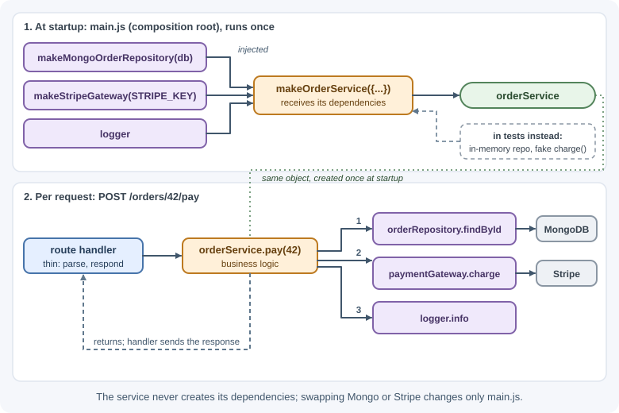
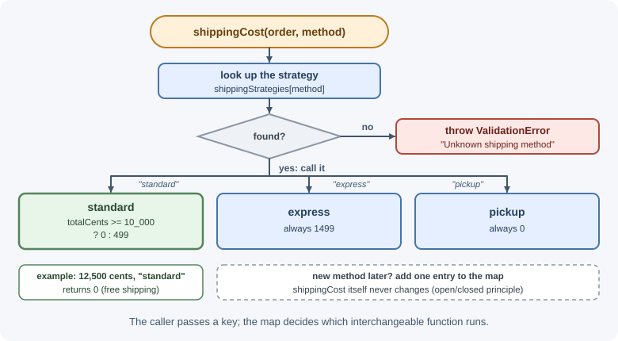
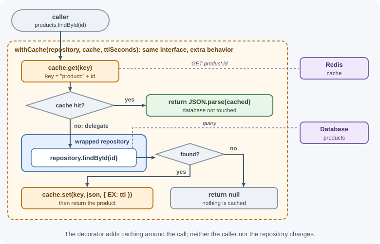

Design Patterns for Backends¶
A design pattern is a named, reusable solution to a problem that keeps appearing in software design. Patterns give teams a shared vocabulary—"put a repository in front of that collection," "wrap the client in an adapter"—and proven structures to start from. This page covers the patterns that appear most often in backend code, each with the problem it solves, a JavaScript example, and when not to use it.
Why it matters¶
Backends face the same problems repeatedly: isolating database code, swapping implementations for tests, talking to third-party APIs with awkward interfaces, adding cross-cutting behavior such as logging and retries, and reacting to events. Recognizing which pattern fits saves design time and produces code other developers understand quickly. Recognizing when a pattern does not fit prevents needless complexity. The principles behind these patterns are covered in design principles.
Real-world usage¶
- Netflix — repository plus adapter. When Netflix's Studio Workflows team had to read one entity from a new service, it "created a GraphQL data source that implemented the repository interface," and a one-line change switched the app to it (Netflix TechBlog).
- Passport.js — strategy. Passport authenticates requests through interchangeable strategies, each implementing one authentication mechanism such as username and password or OAuth (Passport documentation).
- Express — wrapping requests in middleware. Express describes an
application as "essentially a series of middleware function calls," each
able to add behavior and pass control on with
next(), the same idea as the decorator pattern (Express guide). - NestJS — dependency injection as the core. NestJS states that it is built around the dependency injection design pattern and resolves dependencies by their type (NestJS documentation).
- Node.js — observer in the core API. Much of Node.js is built on
emitters that call listener functions, and an
EventEmittercalls its listeners synchronously in the order they were registered (Node.js documentation).
How it works¶
Repository¶
Problem: business logic is littered with database queries, so it is tied to one database and hard to test.
Solution: a repository presents a collection-like interface for one type
of domain object (findById, save, findByCustomer) and hides how
objects are stored.
export function makeUserRepository(db) {
const users = db.collection("users");
return {
findById: (id) => users.findOne({ _id: id }),
findByEmail: (email) => users.findOne({ email: email.toLowerCase() }),
async save(user) {
// Store emails in the same normalized form that findByEmail searches for
const doc = { ...user, email: user.email.toLowerCase() };
await users.replaceOne({ _id: user._id }, doc, { upsert: true });
},
};
}
Services call userRepository.findByEmail(...) and never see query syntax.
Tests pass an in-memory repository.
Avoid when: the repository just mirrors every ORM method one-to-one
(find, findOne, update…), adding a layer with no meaning; or for
reporting queries, which are clearer as dedicated query functions.
Service layer¶
Problem: route handlers grow business logic, and the same logic is needed from HTTP, queue consumers, and scheduled jobs.
Solution: a service layer defines the application's operations (use cases) in one place. Entry points stay thin and call services.
export function makeAccountService({ users, mailer, hasher }) {
return {
async register({ email, password }) {
if (await users.findByEmail(email)) throw new ConflictError("Email in use");
const user = { _id: crypto.randomUUID(), email, passwordHash: await hasher.hash(password) };
await users.save(user);
await mailer.sendWelcome(email);
return { id: user._id, email };
},
};
}
Avoid when: services become "anemic pass-throughs" that only call one repository method each, or "god services" with hundreds of unrelated methods. Group operations by business capability.
Unit of work¶
Problem: one business operation changes several records, and they must be saved together or not at all.
Solution: a unit of work tracks changes during an operation and commits them in one transaction. In Node.js this usually means a database transaction or session passed to each repository call:
await mongoClient.withSession(async (session) => {
await session.withTransaction(async () => {
await orders.insertOne(order, { session });
await inventory.updateOne({ sku }, { $inc: { stock: -1 } }, { session });
});
});
ORMs often implement unit of work internally. See MongoDB transactions.
Avoid when: a single document or row update is enough; transactions add latency and contention.
Dependency injection¶
Problem: a module creates its own dependencies (new Database(),
import stripe), so it cannot be configured or tested in isolation.
Solution: pass dependencies in from outside. The most common form is constructor (or factory) injection:
// The service receives what it needs
export function makeOrderService({ orderRepository, paymentGateway, logger }) {
return {
async pay(orderId) {
const order = await orderRepository.findById(orderId);
await paymentGateway.charge(order.totalCents, order.currency);
logger.info({ orderId }, "order paid");
},
};
}
// Composition root wires real implementations
const orderService = makeOrderService({
orderRepository: makeMongoOrderRepository(db),
paymentGateway: makeStripeGateway(process.env.STRIPE_KEY),
logger,
});
// Tests wire fakes
const testService = makeOrderService({
orderRepository: makeInMemoryOrderRepository(),
paymentGateway: { charge: async () => {} },
logger: { info() {} },
});

DI containers (such as InversifyJS, Awilix, or the one built into NestJS) automate wiring by registering and resolving dependencies by name or type. They help in large applications; manual wiring in one composition root is enough for most Node.js services.
Avoid when: injecting things that never vary (a pure utility function
like slugify)—just import them.
Factory¶
Problem: creating an object requires logic—choosing a type based on
configuration, applying defaults, validating inputs—and that logic is
repeated at every new.
Solution: a factory function centralizes creation.
export function createStorage(config) {
switch (config.STORAGE_DRIVER) {
case "s3":
return makeS3Storage({ bucket: config.S3_BUCKET, region: config.AWS_REGION });
case "local":
return makeLocalStorage({ root: config.UPLOAD_DIR });
default:
throw new Error(`Unknown storage driver: ${config.STORAGE_DRIVER}`);
}
}
Factory functions are idiomatic in JavaScript and also give you
encapsulation through closures (the make… functions on this page are
factories).
Avoid when: creation is a plain object literal with no logic.
Strategy¶
Problem: an algorithm varies (pricing rules, shipping calculators,
authentication methods), and if/else chains grow with every variant.
Solution: define a family of interchangeable functions or objects with the same interface, and pick one at runtime.
const shippingStrategies = {
standard: (order) => (order.totalCents >= 10_000 ? 0 : 499),
express: (order) => 1499,
pickup: () => 0,
};
export function shippingCost(order, method) {
const strategy = shippingStrategies[method];
if (!strategy) throw new ValidationError(`Unknown shipping method: ${method}`);
return strategy(order);
}

This is the main tool for the open/closed principle. Passport.js authentication strategies are a well-known example.
Avoid when: there are only two stable variants; a simple condition is clearer.
Adapter¶
Problem: a third-party library or legacy API has an interface that does not match what your code expects, or you want to be able to replace the provider.
Solution: an adapter wraps the external API and exposes your own interface.
// Your interface: send({ to, subject, html })
export function makeSendGridMailer(client) {
return {
async send({ to, subject, html }) {
await client.send({
to,
from: "no-reply@example.com",
subject,
html,
}); // translate to the provider's shape
},
};
}
export function makeSesMailer(sesClient, SendEmailCommand) {
return {
async send({ to, subject, html }) {
await sesClient.send(new SendEmailCommand({
Destination: { ToAddresses: [to] },
Message: { Subject: { Data: subject }, Body: { Html: { Data: html } } },
Source: "no-reply@example.com",
}));
},
};
}
Switching email providers now touches one adapter, not every caller. Adapters are the "adapters" in ports and adapters.
Avoid when: the library is stable, used in one place, and its interface is already fine.
Facade¶
Problem: a task requires coordinating several subsystems with complex APIs, and every caller repeats that coordination.
Solution: a facade offers one simple entry point over the complexity.
export function makeReportFacade({ queryRunner, csvWriter, storage, mailer }) {
return {
async emailMonthlyReport(month, recipient) {
const rows = await queryRunner.monthlySales(month);
const csv = csvWriter.write(rows);
const url = await storage.uploadTemporary(`reports/${month}.csv`, csv);
await mailer.send({ to: recipient, subject: `Sales ${month}`, html: `<a href="${url}">Download</a>` });
},
};
}
Avoid when: the facade starts accumulating unrelated operations and becomes a "god object."
Decorator¶
Problem: you need to add behavior—logging, caching, retries, metrics, authorization—to an object or function without changing it, and in combinations.
Solution: wrap the original with an object or function that has the same interface, adds behavior, and delegates.
export function withCache(repository, cache, ttlSeconds = 60) {
return {
...repository,
async findById(id) {
const key = `product:${id}`;
const cached = await cache.get(key);
if (cached) return JSON.parse(cached);
const product = await repository.findById(id);
if (product) await cache.set(key, JSON.stringify(product), { EX: ttlSeconds });
return product;
},
};
}
const products = withCache(makeProductRepository(db), redis);

Express middleware is closely related: each middleware wraps the
request handling with extra behavior (logging, authentication, parsing)
and passes control on with next(). Higher-order functions such as
withRetry(fn) are decorators for functions.
Avoid when: the stack of wrappers becomes so deep that it is hard to see what actually runs; keep decoration explicit and close to the composition root.
Observer and publish/subscribe¶
Problem: when something happens (an order is placed), several unrelated parts need to react (email, analytics, stock), and the source should not know about all of them.
Solution: the observer pattern lets listeners subscribe to a subject and be notified of events. Publish/subscribe adds an intermediary—an event bus or message broker—so publishers and subscribers do not know each other at all.
import { EventEmitter } from "node:events";
export const domainEvents = new EventEmitter();
// subscribers: registered once at startup, before any event is emitted
domainEvents.on("order.placed", (event) => sendConfirmation(event).catch(logError));
domainEvents.on("order.placed", (event) => trackAnalytics(event).catch(logError));
// publisher: later, when an order is placed (emit runs listeners synchronously)
domainEvents.emit("order.placed", { orderId, customerId });
In-process events are lost if the process crashes and are invisible to other instances. For reliable or cross-service reactions, use a message broker (see messaging patterns and event-driven architecture).
Avoid when: the flow must be easy to follow step by step; heavy use of events makes control flow implicit and harder to debug.
Singleton (and Node.js module caching)¶
Problem: exactly one instance of something should exist, such as a database connection pool or a configuration object.
Solution in Node.js: modules are cached after their first load, so a module that exports an instance is effectively a singleton:
// db.js — every importer shares this pool
import pg from "pg";
export const pool = new pg.Pool({ connectionString: process.env.DATABASE_URL });
Pitfalls:
- Hidden global state: any code can import and mutate it, which makes tests interfere with each other.
- Hard to replace in tests: callers import the real instance directly. Prefer creating the instance once in the composition root and injecting it.
- Not truly single: the cache is per process and per resolved file path.
Two copies of a package in
node_modules, or several cluster workers, produce several "singletons." - Import-time side effects: connecting to a database just because a file was imported makes startup order fragile.
Avoid when: you can create the object once and pass it where needed.
Builder¶
Problem: constructing an object or query needs many optional parts, and constructors with long argument lists are error-prone.
Solution: a builder assembles the object step by step and produces it at the end.
export function queryBuilder(collection) {
const filter = {};
let sort = {};
let limit = 50;
return {
whereStatus(status) { filter.status = status; return this; },
createdAfter(date) { filter.createdAt = { $gt: date }; return this; },
sortBy(field, direction = -1) { sort = { [field]: direction }; return this; },
take(n) { limit = Math.min(n, 100); return this; }, // enforce a maximum
run() { return collection.find(filter).sort(sort).limit(limit).toArray(); },
};
}
const recent = await queryBuilder(db.collection("orders"))
.whereStatus("PAID")
.createdAfter(new Date("2026-01-01"))
.sortBy("createdAt")
.take(20)
.run();
Query builders (Knex, MongoDB's fluent cursor) and HTTP request builders are common examples.
Avoid when: an options object with defaults is enough—in JavaScript it
usually is: createReport({ month, format = "csv", includeTax = true }).
When to use and when not to use¶
Use a pattern when:
- You can name the problem it solves in your code today (see "Choosing a pattern" below).
- The same structure appears in several places and a shared vocabulary helps reviewers.
- You need a seam for tests or for a likely change of provider.
Skip it when:
- A plain function, an options object, or one
ifstatement is clearer. - The pattern would wrap a single call with no added meaning.
- It hides control flow that people need to follow while debugging.
| Need | Simpler option | Pattern | Pick the pattern when |
|---|---|---|---|
| Data access | Query functions in one module | Repository | Business logic must not know the database |
| Wiring dependencies | One composition root, by hand | DI container | Hundreds of components, or a framework that expects it |
| Varying algorithm | if / switch |
Strategy | New variants keep arriving |
| Cross-cutting behavior | Edit the function | Decorator or middleware | The same behavior wraps many functions |
| Reacting to events | Direct function calls | Observer, or a message broker | Reactions are independent; use a broker if they must survive crashes |
| One shared instance | Module-level export | Injected instance | Tests need to replace it |
| Complex construction | Options object | Builder | Construction has rules and many steps |
Practical examples¶
Patterns working together¶
HTTP route (thin)
└─► OrderService (service layer, receives dependencies via DI)
├─► OrderRepository (repository) ──wrapped by──► withCache (decorator)
├─► PaymentGateway (port) ◄── StripeAdapter (adapter)
├─► shippingStrategies[method] (strategy)
└─► domainEvents.emit("order.placed") (observer / pub-sub)
All created in main.js (composition root) using createStorage(...) (factory)
Choosing a pattern¶
| Symptom | Consider |
|---|---|
| Queries spread through business logic | Repository |
| Logic duplicated across HTTP, jobs, and consumers | Service layer |
| Several writes must succeed together | Unit of work / transaction |
| Hard to test because of hard-coded dependencies | Dependency injection |
Growing if/else on a type or method |
Strategy |
| Third-party API leaks into your code | Adapter |
| Callers repeat multi-step coordination | Facade |
| Need logging/caching/retries without editing code | Decorator |
| Many reactions to one occurrence | Observer / pub-sub |
| Complex optional construction | Builder (or an options object) |
Best practices¶
- Reach for a pattern to solve a problem you have, not to demonstrate the pattern.
- Prefer JavaScript idioms—factory functions, closures, plain objects, higher-order functions—over class-heavy translations from Java.
- Keep creation and wiring in one composition root.
- Name things after the pattern when it helps readers (
OrderRepository,StripeAdapter), not mechanically. - Combine patterns deliberately and keep the call path easy to follow.
- Revisit patterns when they stop paying for their indirection.
In production¶
- Users cannot log in with a capitalized email. Symptom: login fails for some users only. Detect: failures cluster on addresses with uppercase letters. Cause: a repository normalizes the value it searches for but stores the raw value. Fix: normalize on write and on read, as the repository above now does, and add a unique index on the normalized field.
- Stale reads after an update. Symptom: a product page shows the old
price for minutes after an edit. Detect: the cached value and the
database disagree. Cause: a caching decorator such as
withCachecaches reads but never invalidates onsave. Fix: delete or refresh the key when writing, and keep TTLs short for data that changes. - In-process events vanish. Symptom: some orders never get a
confirmation email. Detect: the missing emails line up with deploys or
crashes. Cause:
EventEmitterevents live only in memory. Fix: publish through a durable broker, with the transactional outbox for reliability. - One failing listener crashes the process. Symptom: restarts with an
unhandled promise rejection. Detect: crash logs point at an async event
listener. Cause: a listener's promise rejected with no
.catch. Fix: catch and log inside every async listener, as in the observer example above. - Too many database connections. Symptom: "too many connections" errors after scaling out. Detect: the database's connection count is pool size × processes × instances. Cause: the module-level "singleton" pool exists once per process, not once per system. Fix: size pools per process and plan for the total, or put a connection pooler in front of the database.
Important terminology¶
- Design pattern: A named, reusable solution to a recurring design problem.
- Repository: A collection-like abstraction over persistence for one type of object.
- Service layer: A layer defining the application's operations.
- Unit of work: Tracking changes and committing them together.
- Dependency injection: Supplying dependencies from outside a component.
- Factory: A function or object that encapsulates creation logic.
- Strategy: Interchangeable algorithms selected at runtime.
- Adapter: A wrapper that converts one interface into another.
- Facade: A simplified interface over a complex subsystem.
- Decorator: A wrapper that adds behavior while keeping the same interface.
- Observer / publish–subscribe: Notifying interested listeners of events without coupling them to the source.
- Singleton: A single shared instance.
- Builder: Step-by-step construction of a complex object.
Common mistakes and misconceptions¶
- Pattern-driven design: adding patterns because they are "best practice," producing layers without purpose.
- Generic repositories that expose the whole ORM and hide nothing.
- Singletons as global variables, making tests order-dependent.
- Event-driven spaghetti: so many in-process events that nobody can trace what happens after an action.
- "Patterns are only for object-oriented languages." Most have simpler functional forms in JavaScript.
- Decorators that change behavior unexpectedly, such as a caching decorator that returns stale data for writes.
Revision questions¶
- What problem does the repository pattern solve, and when is it a useless layer?
- How does dependency injection improve testability? Show a factory-injection example.
- Compare the adapter and facade patterns.
- How is Express middleware related to the decorator pattern?
- Why is Node.js module caching a weak form of singleton?
- What is the difference between observer and publish/subscribe?